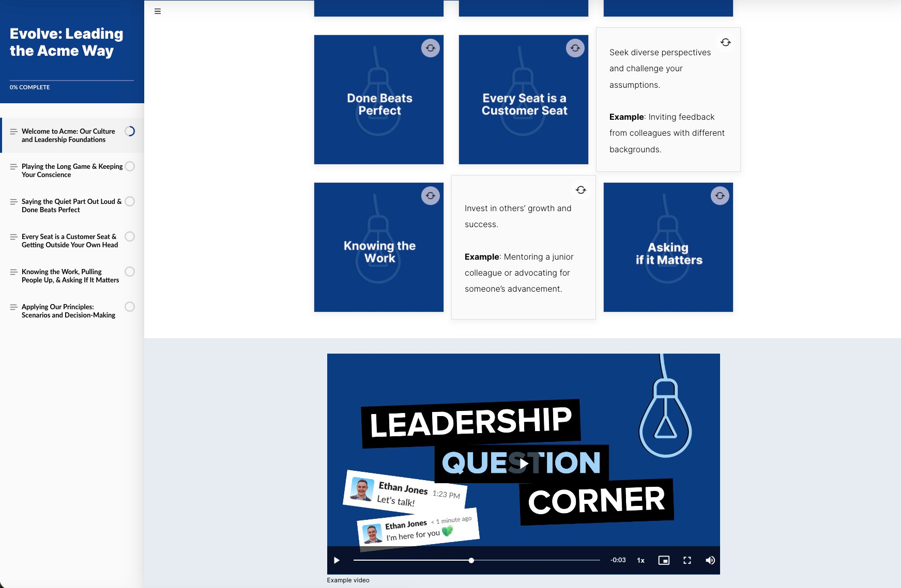
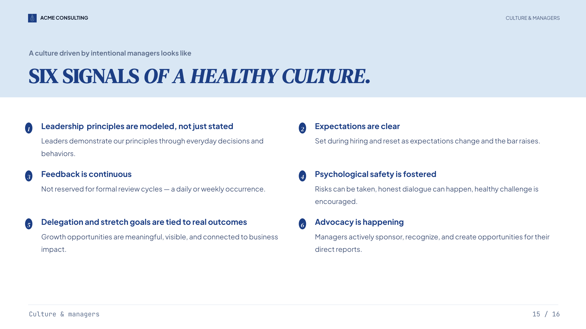
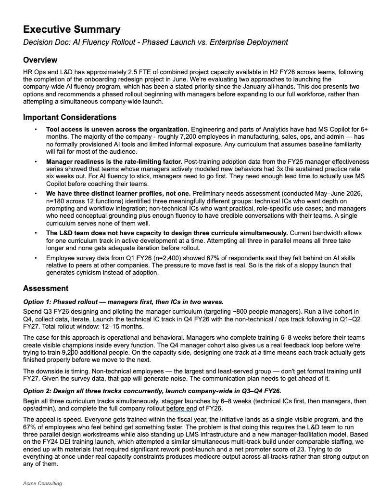

A few representative samples from my L&D and consulting work — spanning self-paced learning design, executive communication, and strategic decision-making artifacts. Each one solved a real problem for a real organization.

Sample 01 • eLearning
Acme's senior leadership team came to me with a specific gap: they were hiring strong managers from outside the company who knew how to lead, but didn't yet understand the cultural principles that defined how leadership actually worked at Acme.
I designed Evolve to close that gap quickly. The course focuses on the leadership principles that matter most to Acme's culture, paired with a learning log that helps users translate concepts into their day-to-day work. The result: faster ramp-up, less cultural friction, and a shared language for new leaders entering the organization.
Note: the live version below is an abridged version. The original course included substantial video content that's been removed for proprietary reasons.

Sample 02 • Strategic Communication
Acme was struggling to retain talent density at a critical period of growth. I built this deck to give senior leaders a clear, prioritized view of the retention levers actually worth pulling — and the trade-offs of each. The PDF below is a single representative slide from the larger presentation.

Sample 03 • Executive Communication
An example of how I structure documentation for executive review: critical information only, formatted to drive quick alignment between stakeholders and enable smart decisions in minimal time. The original solved a real decision about onboarding location at a previous company — this version reframes the same structure around a hypothetical AI training rollout.
Whether you're hiring for an L&D role or scoping a consulting engagement, I'd be glad to walk through any of these samples in more detail and discuss how I'd approach your specific situation.
Get in Touch